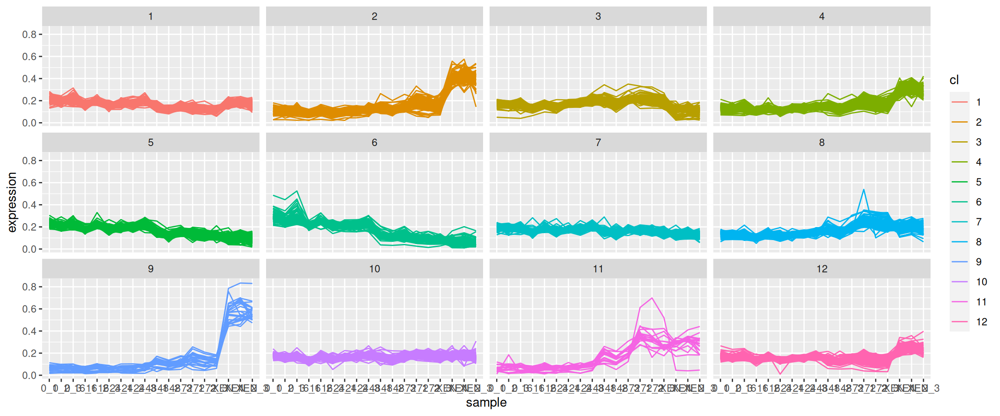

Chapter 10 Supervised learning
The goal of this last chapter about machine learning will be supervised learning, and in particular classification. In this chapter, you will learn
- learn what classification is;
- learn about labelled, unlabelled, training and testing data;
- learn about and apply k-nearest neighbour, a simple non-parametric classifier;
- see why and how to use cross-validation;
- and learn about model complexity and generalisation.
10.1 Introduction
Often, we faced with omics data, we have annotations for some of the samples (or features) we have acquired:
Among the 100s of patient tumours that were assayed using RNA sequencing of microarrays, we know the grade of the tumour for about half. We want to predict the grade of the other half using the gene expression profiles.
We have performed a spatial proteomics experiment such as in Christoforou et al. (Christoforou et al. 2016Christoforou, A, C M Mulvey, L M Breckels, A Geladaki, T Hurrell, P C Hayward, T Naake, et al. 2016. “A Draft Map of the Mouse Pluripotent Stem Cell Spatial Proteome.” Nat Commun 7: 8992. doi:10.1038/ncomms9992.) (see section 8.7.2) and know the sub-cellular localisation of some proteins. We want to predict the sub-cellular localisation of the other proteins using the protein profiles.
In both of these examples, the quantitative data are the data that we want to use to predict properties about samples or features; these are called the predictors. The grade of the samples in the first example and the protein sub-cellular localisation in the second one are the labels that we have in some cases, and want to predcit otherwise. We can thus split our data in two parts, depending whether we have labels, or whether we want to predict them. The former are called labelled, and the latter unlabelled.
Figure 10.1: In supervised learning, the data are split in labelled or unlabelled data. The same applies when some of the columns are labelled.
In the figure above, the labels represent categories that need to be inferred from the predictors. This class of supervised learning is called classification. Classification are also split into binary classification when there are only two classes, or multi-label problem when, like above, there are more than two. The latter is a generalisation of the binary task. When the annotations are continuous values, the situation is referred to as a regression problem.
► Question
Load the giris2 data from the rWSBIM1322 package (requires version >= 0.1.13). Identify the labelled and unlabelled data; how many are there respectively.
► Solution
► Question
Visualise the giris2 data on a PCA plot, highlighting the labels (or absence thereof). Using the visualisation, will the classifying of the unlabelled data will be difficult or easy? Motivate your aswer.
► Solution

10.2 K-nearest neighbours classifier
In this chapter, we’ll use a simple, but useful classification algorithm, k-nearest neighbours (kNN) to classify the giris patients. We will use the knn function from the class package.
K-nearest neighbours works by directly measuring the (Euclidean) distance between observations and inferring the class of unlabelled data from the class of its nearest neighbours. In the figure below, the unlabelled instances 1 and 2 will be assigned classes A (blue) and B (red) as their closest neighbours are red and blue, respectively.
Figure 10.2: Schematic illustrating the k nearest neighbors algorithm.

Typically in machine learning, there are two clear steps, where one first trains a model and then uses the model to predict new outputs (class labels in this case). In kNN, these two steps are combined into a single function call to knn.
Page built: 2019-11-28